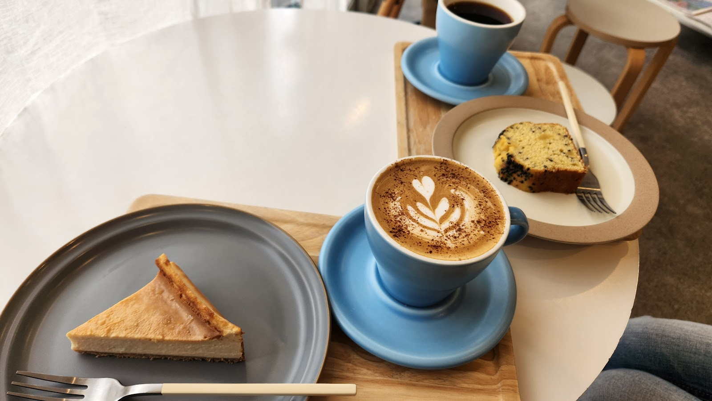
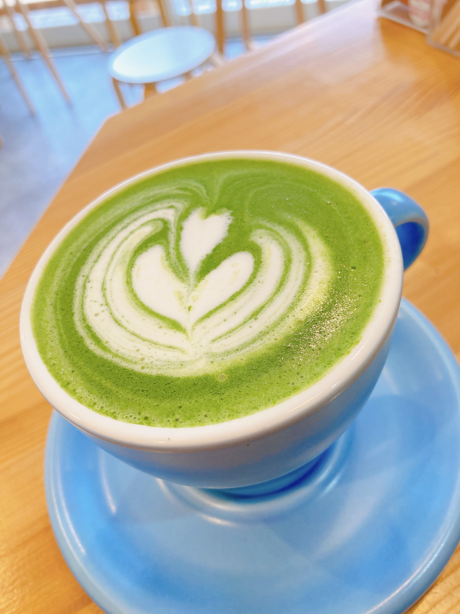

ハンドドリップで一杯ずつ丁寧に淹れる姿勢は、来店されたお客様の声からも伝わってきます。 淹れたての香りが漂う店内で、じっくりと一杯に向き合う時間を過ごせそうです。

CONCEPT
Photo: 女装子あんず
01
一杯に込める丁寧さ

Photo: 磯崎新02
小さな店内で過ごす、静かなひととき
 Photo: Hayato Onishi
Photo: Hayato Onishi
店内はこぢんまりとした造りで、一人でも気兼ねなく過ごせる落ち着いた雰囲気が漂います。 読書をしたり、物思いにふけったり。静かな時間を求める方にも心地よい空間です。
03
我孫子駅前という、ちょうどいい距離感
我孫子駅前という立地は、通勤や通学、お出かけの前後にふらりと立ち寄れる距離感です。 駅からほど近い場所にありながら、落ち着いた時間を過ごせる。そんな、ちょうどよさが魅力です。